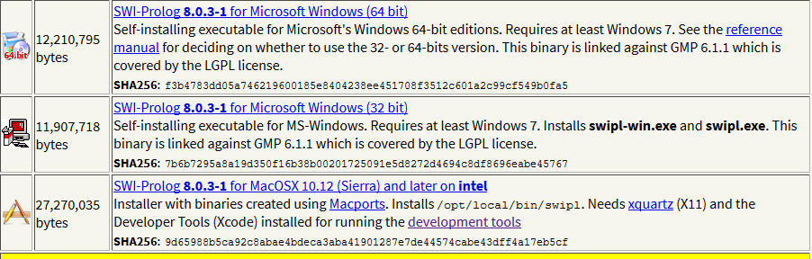
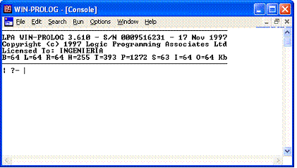
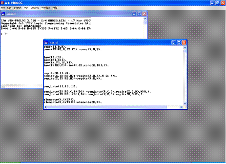

Tarea 3
PROLOG
SÍMBOLOS
- - Constantes:
(2,4,7,6,12,20,60)
- - Relación binaria:
is,+,-,*,/,mod
- - Variables:
Las variables en Prolog no son variables en el sentido habitual, por eso las llamamos variables lógicas. Se escriben como una secuencia de caracteres alfabéticos comenzando siempre por mayúscula o subrayado.
- Ejemplos de variables:
Variable
_Hola
_
Pero no son variables:
variable
$Hola
p__
El hecho de que los nombres de variables comiencen por mayúscula (o subrayado) evita la necesidad de declarar previamente y de manera explícita las variables, tal y como ocurre en otros lenguajes.
SINTAXIS
Datos
El sistema Prolog reconoce el tipo de un objeto en el programa por medio de su forma sintáctica. Esto es posible porque la sintaxis de Prolog especifica diferentes formas para cada tipo de datos. La forma de distinguir entre átomos y variables es que las variables empiezan con letras mayúsculas, mientras que los átomos con minúsculas. No existe información adicional para comunicarle a Prolog el orden para reconocer el tipo de un objeto.
Los átomos pueden construirse de 3 formas:
- Cadenas de letras, dígitos y el caracter '_', empezando con una letra minúscula
ana
pedro
x25
x_25
procedmiento_uno
categoria_x
- Cadenas de caracteres especiales
<---->
=====>
....
- Cadenas de caracteres encerradas en apóstrofes. Esto se utiliza cuando se quiere, por ejemplo, tener un átomo que empiece con una letra mayúscula.
'Tom'
'Polo_Norte'
Nota: en algunos compiladores, en vez de utilizar apóstrofes se utilizan comillas " " como en el caso de Prolog.
NÚMEROS
Los números usados en Prolog incluyen números enteros y números reales. La sintaxis de los enteros es simple:
1
1313
0
El tratamiento de números reales depende de la implementación de Prolog. Asumiendo una sintaxis simple:
3.14
-0.0035
100.2
Los números reales no son muy utilizados en programas de Prolog. La razón de esto es que Prolog es principalmente utilizado como un lenguaje simbólico, no de computación numérica. En la computación simbólica, los enteros son utilizados, por ejemplo, para contar el número de elementos en una lista; por lo que los números reales son poco utilizados.
Variables
Las variables son cadenas de letras, dígitos y el signo '_'. Estas empiezan con una letra mayúscula o el símbolo '_':
X
Objeto2
_23
Resultado
_x23
Cuando una variable aparece en una cláusula sola, no se necesita inventar un nombre para ella. Se usa llamarla variable "anónima", cuando es escrito únicamente el signo '_'. Por ejemplo, consideremos la siguiente regla:
hijo(X) :- padre (X,Y).
La regla dice: para toda X, X tiene un hijo si X es el padre de alguna Y. Nosotros estamos definiendo la propiedad hijo el cual, no depende del nombre del hijo. Entonces, aquí hay un lugar en donde podemos usar una variable anónima. Si rescribimos la cláusula:
hijo(X) :- padre(X,_).
Operadores
Los operadores de Prolog están divididos en dos clases: aritméticos y relacionales.
Los operadores aritméticos incluyen los símbolos parasuma, resta, multiplicación y división . En Prolog, si dos enteros son sumados, restados o multiplicados, el resultado será un entero. Siempre que uno de los operandos, en cualquiera de estas operaciones sea un número real, el resultado siempre será un real. El resultado de una división, siempre que los operandos sean enteros o reales, será siempre real.
ARITMÉTICOS
Todas las versiones de Prolog soportan los siguientes operadores aritméticos, listados en el orden de prioridad de ejecución.
- + --> SUMA
- - --> RESTA
- * --> MULTIPLICACIÓN
- / --> DIVISIÓN
- // --> DIVISION ENTERA
- MOD --> RESIDUO
- ^ --> POTENCIA
Los paréntesis se pueden utilizar para dar preferencia de ejecución en una expresión compuesta. Prolog utiliza la precedencia de operadores con la regla de la mano izquierda.
A continuación se muestran algunas operaciones más complejas que PROLOG provee:
|
OPERACIÓN |
DESCRIPCIÓN |
|
Sqrt(X) |
Calcula la raíz cuadrada de la variable |
|
log(X) |
Calcula el logaritmo de X |
|
ln(X) |
Calcula el logaritmo natural de X |
|
abs(B) |
Regresa el valor absoluto de B |
|
sin(T) |
Seno de T |
|
cos(A) |
Coseno de A |
|
tan(C) |
Tangente de C |
RELACIONALES
Prolog soporta los siguientes operadores relacionales:
- = --> IGUAL QUE
- > --> MAYOR QUE
- >= --> MAYOR O IGUAL QUE
- >= --> MENOR O IGUAL QUE
- <> --> DESIGUAL QUE
- =/= --> DIFERENTE QUE
- is --> EVALUADOR DE EXPRESIÓN
- seed --> GENERADOR DE NÚMEROS ALEATORIOS
Cuando dos objetos que son símbolos o cadenas de caracteres son comparados, los caracteres son convertidos a su equivalente ASCII. El valor de cada carácter es examinado a partir del operador relacional, de izquierda a derecha.
Predicados
Un predicado es la relación directa con una expresión. Cada predicado usado en una cláusula de Prolog debe ser declarado, basado en la declaración de los tipos de dominios para cada uno de los nombres de los objetos.
paciente(nombre, edad, peso, presion_sanguínea).
mercado(encargado, vendedor).
Estructuras
Los objetos estructurados (o simplemente estructuras) son objetos que tienen varios componentes. Los componentes pueden ser a su vez estructuras. Por ejemplo, la fecha, puede ser vista como una estructura con 3 componentes: día, mes y año. Las estructuras son tratadas en el programa como objetos simples, aunque estén formadas por muchos componentes. El orden en que se combinan los componentes dentro de un objeto simple, es la forma en que escogemos una functor. Un functor conveniente para nuestro ejemplo es fecha. Entonces la fecha 1o. de Enero 1975 puede escribirse:
fecha(1, enero, 1975)
Todos los componentes en este ejemplo son constantes (2 enteros y un átomo). En la siguiente figura vemos como se representa en forma de árbol, y a su vez cómo está escrito en Prolog:
Ahora bien, cualquier día de enero de 1975 puede representarse mediante la estructura:
fecha(Día, enero, 1975)
Donde Día es una variable que puede ser instanciada por cualquier objeto en cualquier momento de la ejecución del programa. Sintácticamente, todos los objetos de datos en Prolog son términos. Por ejemplo, enero y date(1,enero,1975) son términos.
Consultas
Para plantear una consulta en Prolog, el usuario simplemente prueba ésta, para ver si ésta es verdadera. Si la prueba es positiva, Prolog contesta: YES, de lo contrario responde NO, o también se usa TRUE o FALSE, dependiendo del programa que se use para la programación del
lenguaje. paciente ("ana", femenino). yes
Comentarios
Cuando se quiere hacer un comentario que cuenta con más de una línea, se hace de la siguiente manera:
/* Comentario x Comentario y */
Si el comentario es de una solo línea simplemente se antecede el signo de % al comentario. Es importante saber que los comentarios no tienen efecto en la ejecución del programa.
% Comentario
Cláusulas y Relaciónes
La programación lógica está basada en la noción de relación . Debido a que en la relación es un concepto más general de una aplicación. La programación lógica es potencialmente de alto nivel. Considerar 2 conjuntos de valor S y T, R es la Relación entre S y T, para toda X que pertenece a S y Y que pertenece a T y R(X,Y) es verdadero o falso. Dado a, determinar el valor m(a). En la programación Lógica se implementa las relaciones. Sea R una relación:
Dado a y b, determinar cuando R(a,b) es verdadero.
Dado a, encontrar todos los Y/R(a,y) es verdadero.
Dado b, encontrar todos los X/R(x,b) es verdadero.
Encontrar X y Y/R(x,y) es verdadero.
TIPOS DE RELACIONES
Si R(x) entonces relación unitaria.
Si R(x ,y) entonces relación binaria.
Si R(x, y, z) entonces relación ternaria.
Un programa en PROLOG define una colección de relaciones. Cada relación es definida por una o más cláusulas.
INTERPRETACIÓN DE UNA CLÁUSULA EN PROLOG
A:- A1,...,An.
:- --> Es equivalente "Si" o "si".
, --> Es equivalente "AND".
; --> Es equivalente a "OR"
ESQUELETO DE LOS PROGRAMAS
Cada regla esta formada por un primer miembro (o cabeza de la regla) un segundo miembro (o cola del arreglo) ligados por :- y termina con el carácter .
APLICACIÓN A DESCARGAR PARA EDITAR Y EJECUTAR
SWI-Prolog
A QUE TIPO DE PARADIGMA PERTENECE
Prolog es un lenguaje de programación lógico e interpretado.
EJECUCIÓN DE UN PROGRAMA
En Windows
Al iniciar Prolog, aparece la consola en la cual se hacen las consultas:
En el menú de File/New se abre un nueva ventana para escribir código fuente.
- Tener el programa de Prolog abierto.
- En el código fuente se compila, haciendo clic en el menú compile.
- En la consola se hace la consulta.
:?- easter(2000,Y,D).
Y=4,
D=23.
Easter es un programa que se encuentra en la carpeta de Examples que vienen en prolog.
C:/Pro386w/examples/Easter.pl
Si las premisas son contradictorias el argumento no es valido
P1^P2^...^Pn Þ Q
Q:-p1 ^p2 ^...^Pn Cláusula = Clause
Implicación Premisa
\ Q es una conclusión Q:-P1,P2,...Pn.